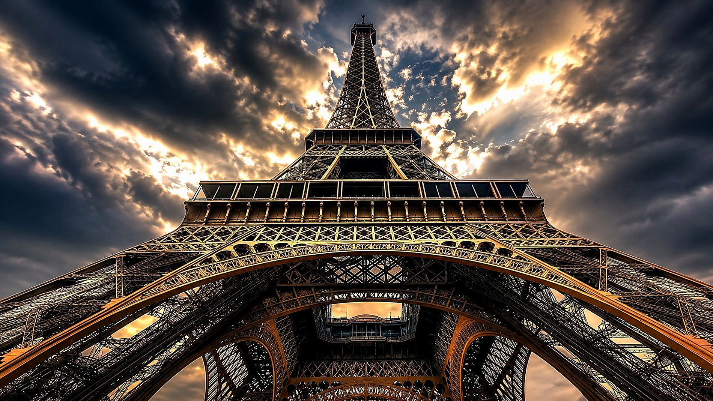
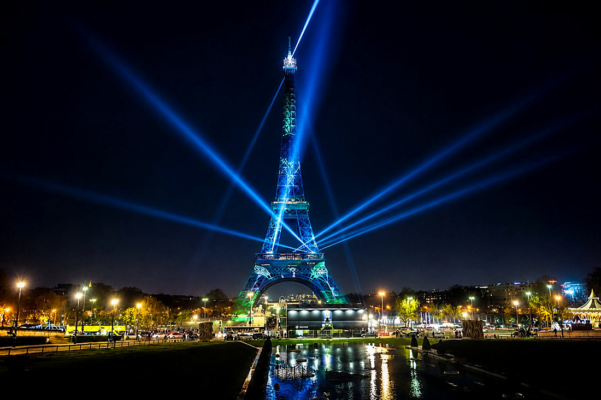
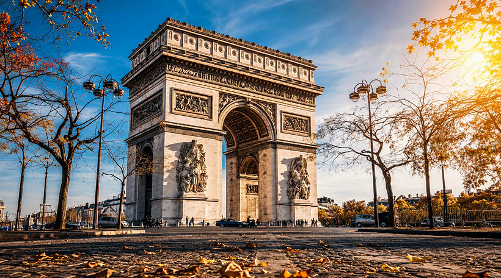
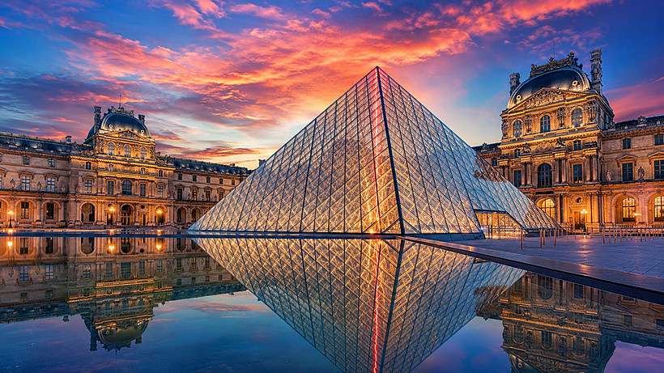
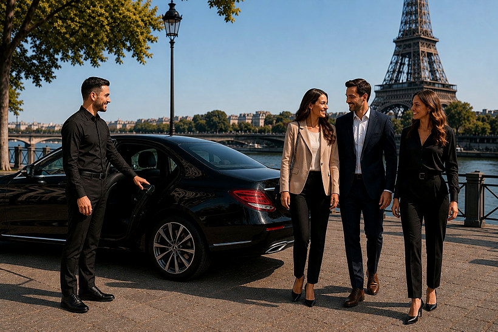
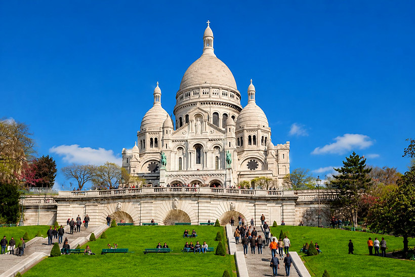

 Pack Loisir & Visite
Pack Loisir & Visite
Découvrez les monuments incontournables de Paris confortablement installé dans une berline privée, à votre rythme, avec arrêts photos.
Votre chauffeur vous prend en charge à l'hôtel et enchaîne les monuments dans l'ordre le plus logique selon votre point de départ, avec une pause photos de 10 à 30 min à chaque site.
Le point de vue le plus iconique de la capitale, idéal pour les photos.
La plus belle avenue du monde et son arc majestueux.
Le plus grand musée du monde et sa célèbre pyramide de verre.
Le cœur historique de Paris au fil de la Seine.
Le village des artistes et sa basilique dominant Paris.
Mise à disposition à l'heure, chauffeur anglophone sur demande, eau offerte.
Tarif à l'heure (mise à disposition) — itinéraire et durée personnalisables. Devis sur-mesure.
Prise en charge à votre hôtel par un chauffeur privé. Les monuments s'enchaînent dans l'ordre le plus logique selon votre point de départ, avec une pause photos de 10 à 30 min à chaque site. Une bouteille d'eau est offerte par personne.





Choisissez le Pack Express ou Serein dans « Services Pack », ou demandez un circuit 100 % sur-mesure avec le Pack Spécial Devis.
Continuer ma réservationVotre réservation en cours sur le site est conservée.